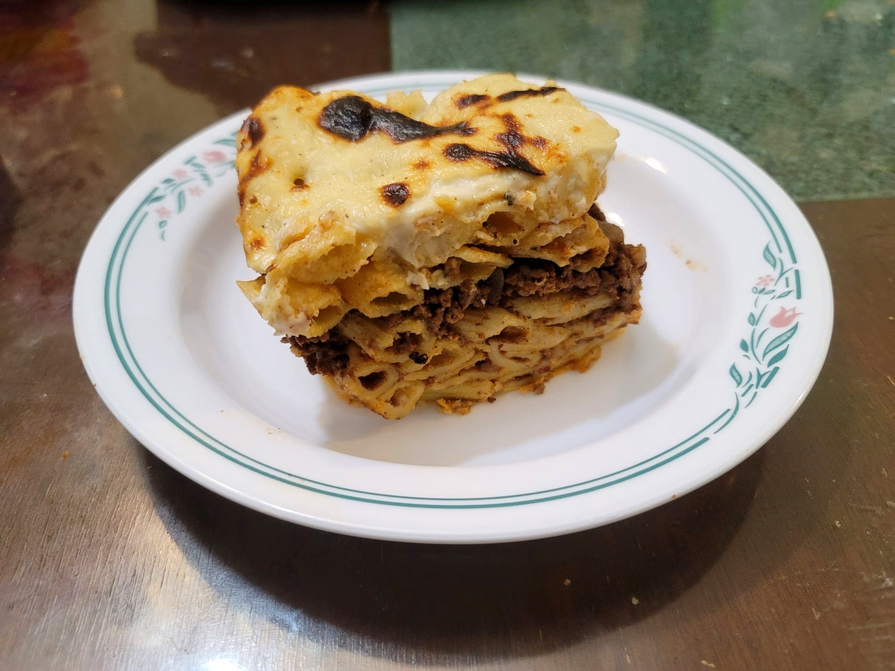

Macarona Bechamel

Ingredients:
Pasta:
Meat Sauce:
- 1 1/2 lb Ground beef
- 1 tbsp Canola oil
- 1 Onion, diced
- 15 oz can Tomato sauce
- 1/2 tbsp Salt
- 1/2 tbsp Allspice
- 1 tsp Cinnamon
- 1/2 tsp Black pepper
Bechamel:
- 1 cup Butter
- 1 cup Flour
- 4 cups Milk
- 1 cup Chicken stock OR Water + 1 tsp Chicken bouillon
- 1/2 tsp Salt
- 1/4 tsp Black pepper
Instructions:
- Preheat an oven to 375 degrees Fahrenheit.
- Bring a pot of salted water to a boil. Add the penne and cook until al dente, about 11 minutes. Then strain from the water.
- For the sauce, add the oil to a skillet of medium-high heat. Add the onion and sauté until softened, about 5-7 minutes. Then add the meat and sauté until browned, another 5-7 minutes. Stir in all the spices and the tomato sauce. Once simmering, reduce the heat to low. Cook for 5 minutes. Then remove from the heat and reserve.
- For the bechamel, place a pot over medium heat and melt the butter. Add the flour and whisk until it soaks up all of the butter. Add the milk in small batches while continuously whisking so that no lumps form. Once the milk is fully incorporated, do the same with the chicken stock.
- Continue too whisk for 4-5 more minutes for the sauce to thicken. It is thick enough when coating a spoon with the sauce and finger run through the sauce creates a streak.
- Add roughly 1-2 cups of the bechamel to the pasta and toss to combine. Place a few tbsp of bechamel onto the bottom of a large baking dish, about 9x13 or larger. Then add half the pasta, the meat sauce, the rest of the pasta, and then top with the remaining bechamel. Cover with aluminum foil and bake for 45 minutes. Then remove the foil and broil just enough to brown the top.
- Let cool for at least 20 minutes before serving. Serve hot.